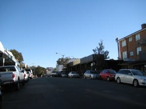

Well we had beach volleyball at the 2000 Olympic Games and the ice skating rink in winter for last few years. Now Waverley Council has said it will host the International Beach Polo Tournament at Bondi Beach on 9th May 2015. This one day event is expected to attract around 4000 people and will involve bringing in polo ponies to Bondi Beach and the building of infrastructure to support such an event.
The Council has approved the event “in principle” subject to a few conditions, including the satisfactory submission of a final Event Management Plan (which meets traffic, parking and complying regulatory requirements) at least 16 weeks prior to the event occupation period.
It’s worth noting that this event was not unanimously approved. Four councillors opposed the motion to approve this proposal at the Council’s Operations Committee Meeting held on 1 July 2014.
There has been little press about this proposal, but here is an article written by Emily Contador-Kelsall.
Of course such an idea is completely ludicrous to me – and I suspect to many other locals also. Aren’t there already healthy numbers of tourists in Bondi Beach? Aren’t people all around the world already aware of Brand Bondi?
Yet, for Waverley Council, having Bondi host the International Beach Polo Tournament, [such] a prestigious international sporting event, “will help promote and showcase Bondi Beach to the rest of the world and could bring social, physical and economic benefits to Bondi.”
Really?
I think Sally Betts might need to knock on a few residents’ doors and really gauge how many locals think that attracting another 4000 people to Bondi in one day (together with all the other repercussions that such an event would have on the area) is going to bring them social, physical and economic benefits!
]]>Here are a couple of photos from last year showing the site with the Club in rubble…

the Hakoah Club site seen from Hall Street, July 2011

the Hakoah Club site seen from O'Brien Street, July 2011
And here is a photo of the new building, Boheme, still incomplete, on the Hakoah Club site. I snapped this pic last week.

Boheme, still under construction, where the Hakoah Club stood
Bates Smart, the designers of Boheme, state on their website, that the Hakoah Club was “the social headquarters of Sydney’s Jewish community for 35 years.”
Yes, the club was certainly an important social space for many people in the Eastern Suburbs Jewish community – dare I suggest, particularly for the over 50s. It was a football (soccer) club and a social venue, but I don’t know how many people in Sydney’s Jewish community would agree with the statement that the Hakoah Club was “the social headquarters” of Sydney’s Jewish community.
Like most other ethnic groups, the Sydney Jewish community comprises a diverse group of people who chose to socialise in many different ways. The Hakoah Club was one venue in Sydney were such socialisation occurred.
In any case, I don’t really know what else I can say about this new megalith here, except that it will no doubt change the landscape and culture of the Hall Street I‘ve known for the past 35 years.
The Hakoah Club in Hall Street is now well and truly history.
Let’s see what commercial and real estate wonders Boheme will contribute to the Bondi community. I await in anticipation, and while I do, I am interested in reader’s comments….
]]>
Goodbye Hakoah Club, The Boheme is movin' in 17/4/11
Many visible changes have been happening in Bondi of late, and this month sees the beginning of the end of the low-end village-like atmosphere of Hall Street and Gould Street. There’s the destruction of the Bondi Hotel bottlo and the erection of new shops and arcade in its place. And of course the rather huge development of the Hakoah Club site and its adjoining properties. These are clearly movements away from the once un-selfconscious character of old Bondi towards the now well and truly entrenched commercial, trendy, new Bondi. I wonder how many more Oportos or Nandos or McDonalds or Hungry Jacks will pop up in the months ahead? How many more parking meters and tourist dollars can we squeeze into Bondi until we can’t recognise it anymore?


Before Bondi became a BRAND…
– you could buy pies and cream puffs from the Flying Pieman at 3.30 in the morning
– there were 3 petrol stations on Campbell Parade
– the Astra was a grungy pub renowned for being somewhere you could always score
– you’d have ‘eyeballs’ at ‘the concrete’
– you could buy shawarmas at 3.00 in the morning in Hall Street
– there were only about 3 cafes you could hang out in… The Gelato Bar , Positive Vibrations and Cafe 729 and if you travelled to Rose Bay, there was Grandfather’s Moustache
– being a Bondi fashionista meant wearing a sloppy joe
– you could go to Valissis’ and play pinnies and grab a burger and a milkshake
– the 322 bus route – which went from Rose Bay wharf to Bondi Beach – still ran and terminated at South Bondi at the entrance to Queen Elizabeth Drive
– there was a strong local and transient population of Maoris living in Bondi
– you could drive up to the Dover Heights Bowling Club late at night and take in the lights of Bondi from the Heights
– there was “unauthorised” grafitti along the walls of the promenade, which said things like “Bondi Chicks Go Off”
– you could park in the middle of Campbell Parade FOR FREE between Lamrock Avenue and Beach Rd
I would love for more to be added to this list so please go for it…
]]>